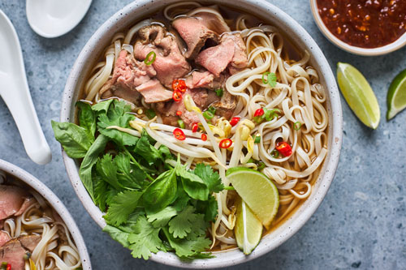

Pho

Description
Authentic, Vietnamese pho soup is all about the broth! Beef bones, fish sauce, star anise, and ginger simmer for at least 6 hours,
creating a complex aromatic broth that may not be quick, but it's certainly delicious. The flavorful broth is ladled over rice noodles
and thinly sliced beef and topped with fresh garnishes.
Ingredients
- Beef Soup Bones
- Rice Noodles
- Beef
- Fish Sauce
- Onion
- Spices and Seasonings
- Garnishes
Steps
- Gather all Ingredients
- Preheat the oven to 425 degrees F
- Place beef bones on a baking sheet and roast in the preheated oven until browned, about 1 hour
- Place onion halves on a second baking sheet and roast on another rack until blackened and soft, about 45 minutes
- Transfer beef bones and onion halves to a large stockpot. Add ginger, salt, star anise, fish sauce, and 4 quarts of water;
bring to a boil. Reduce heat to low and simmer for 6 to 10 hours. Strain the broth into a saucepan and set aside.
- Place rice noodles ina large bowl filled with room temperature water. Let soak for 1 hour. Drain
- When noodles have soaked for 1 hour, heat up the reserved broth by bringing it to a simmer
- Bring a large pot of water to a boil. Cook the noodles in the boiling water for 1 minute. Drain.
- Divide noodles among 4 serving bowls; top with sirloin, cilantro, and green onion. Ladle hot broth over the top.
Stir and let sit until beef is partially cooked and no longer pink, 1 to 2 minutes.
- Serve with bean sprouts, Thai basil, lime wedges, hoisin sauce, and chile-garlic sauce on the side.